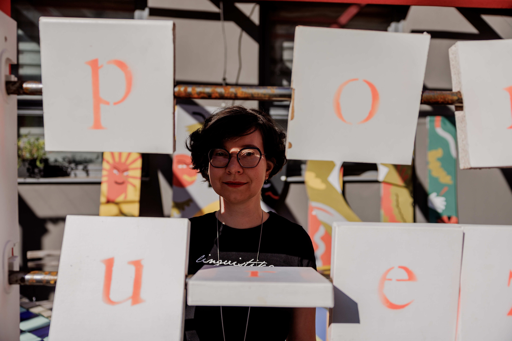

Martina Vokáčová

I'm a researcher and lecturer at the Faculty of Arts, Charles University. I'm currently finishing my PhD on logical metonymy in Czech -- combining corpus analysis, behavioural experiments, and large language models. Alongside that, I'm involved in projects on pseudoword processing, word order variation in Dutch, and linguistic variability in human and AI language.